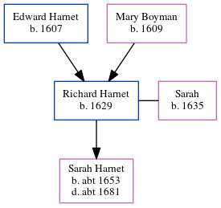

Richard Harnet 1629 -
[ Home ] | [ Calendar ] | [ Surnames Index ] | [ Errors ] | [ Family History ]The child of Edward Harnet and Mary Boyman, Richard Harnet, the 8 times great-grandfather of Nigel Horne, was born in Thanet, Kent, England in 16291, was baptised in Minster, Thanet, Kent, England on 20 Jul 1629 and had 1 child with Sarah: Sarah.
Parents
- Edward was born in 1607
- Mary was born in 1609
Children
- Sarah was born c. 1653
Citations
- Kent, England, Tyler Index to Parish Registers, 1538-1874 Online publication - Provo, UT, USA: Ancestry.com Operations, Inc., 2010. This collection was indexed by Ancestry World Archives Project contributors.Original data - Frank Watt Tyler. The Tyler Collection. Canterbury, Kent, England: The Institute of Herald
Family Tree
Map
Generated by ged2site. Last updated on Jul 3, 2024
Known Issues
Date of baptism (20 Jul 1629) before date of birth (1629)